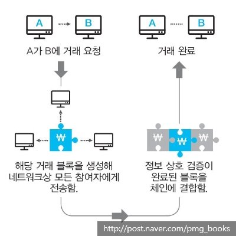

누구나 열람할 수 있는 장부에 거래 내역을 투명하게 기록하고, 여러 대의 컴퓨터에 이를 복제해 저장하는 분산형 데이터 저장기술이다. 여러 대의 컴퓨터가 기록을 검증하여 해킹을 막는다.
블록에 데이터를 담아 체인 형태로 연결, 수많은 컴퓨터에 동시에 이를 복제해 저장하는 분산형 데이터 저장 기술이다. 공공 거래 장부라고도 부른다. 중앙 집중형 서버에 거래 기록을 보관하지 않고 거래에 참여하는 모든 사용자에게 거래 내역을 보내 주며, 거래 때마다 모든 거래 참여자들이 정보를 공유하고 이를 대조해 데이터 위조나 변조를 할 수 없도록 돼 있다.